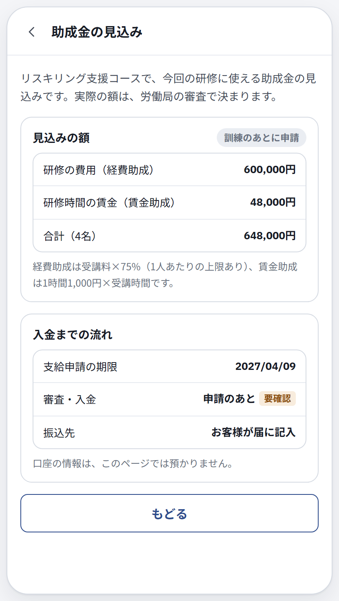
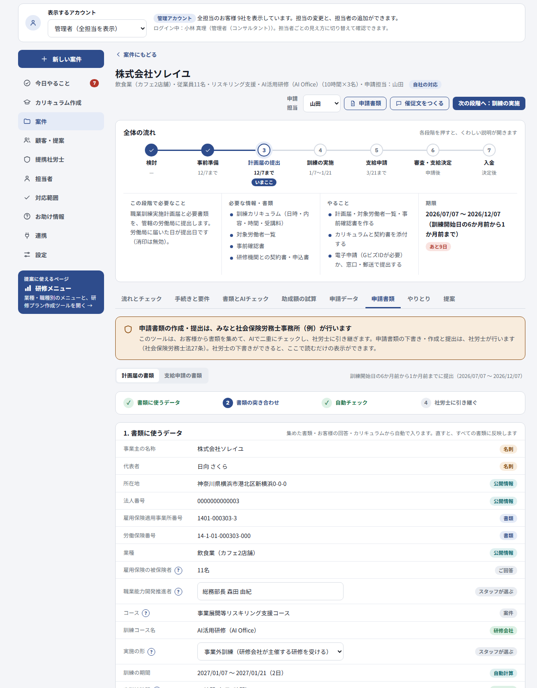
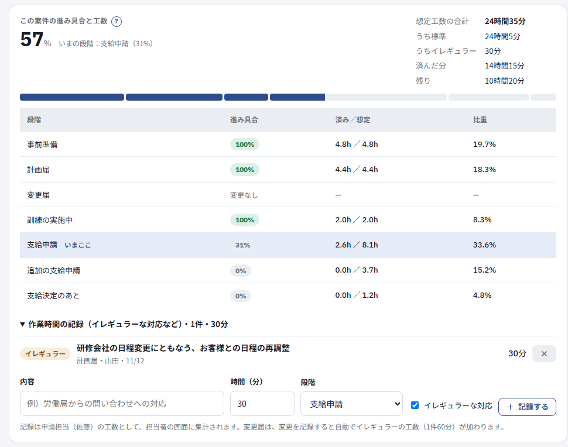
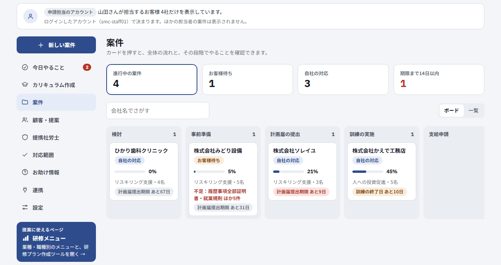
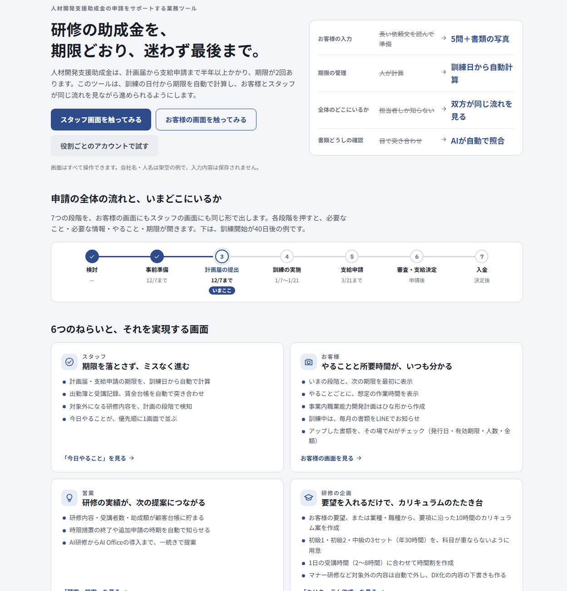

人材開発支援助成金コンシェルジュ助成金の申請業務を、
仕組みで回す。
期限の計算、書類集め、AIによる二重チェック、
社労士の確認印、工数の見える化まで。
人材開発支援助成金の申請業務を、ひとつの画面で。
助成金の申請業務、こんなことが起きていませんか
締切に気づくのが遅れる
計画届・支給申請の期限を人が計算。土日祝や年末年始の扱いで迷う。
→ 期限を過ぎると申請できないことも書類の不備・差し戻し
発行日の古い証明書、人数や金額の食い違い。気づくのは提出の直前。
→ 取り直し・再提出の手間Excelとメールで進行管理
どの会社がどの段階か、誰の番か。ファイルとメールを探さないと分からない。
→ 確認と報告に時間がかかるダブルチェックに人手
書類の読み合わせを2人で目視。繁忙期は確認待ちが積み上がる。
→ 人を増やさないと件数を増やせない担当ごとの属人化
要件の判断や書類の進め方が担当者の頭の中。休み・退職で止まる。
→ 引き継ぎができない工数が見えない
1社にどれだけ時間がかかったか、誰がどれだけ進めたかが分からない。
→ 値付けや評価の根拠がない計画届は訓練開始の6か月前〜1か月前、支給申請は訓練終了の翌日から2か月以内。長い期間、多くの書類と関係者を、漏れなくつなぐ仕組みが必要です。
4つの役割が、同じ流れを見ながら進めます
期限は、訓練の日付から自動で計算します
朝ひらけば、今日やることが優先順に並んでいます
- 1今日やること期限の近い順に並びます。上から片づければ、抜け漏れが起きにくくなります。
- 2近い期限「あと9日」などの残り日数を、色つきで表示します。
- 3気づきを自動で対象外になる研修内容や書類の不足を、早い段階でお知らせします。
段階ごとの進み具合（例）
 123
123
不足している書類だけを並べたLINE用の文面を作ります。期限も自動で文面に入ります。
2つのAIが別々に読み、分かれたところだけ人が確認
| ダブルチェック | これまで | コンシェルジュ |
|---|---|---|
| 1人目 | 担当者が目視で読み合わせ | AI-1 要件のルールで自動チェック。アップした直後に結果が出ます |
| 2人目 | 別のスタッフが、もう一度目視 | AI-2 別の読み方で読み取り、AI-1と突き合わせ |
| 判断が要る所 | 全部の書類を同じ手間で確認 | 人 判定が分かれた書類・項目だけに集中して確認 |
| 最終確認 | 紙やメールで社労士に回す | 社労士 画面で書類ごとに確認し、登録番号つきの確認印 |
AIの結果は全員に共有。最後は社労士の確認印
 12
12 345
345- 1判定が分かれたAI-1とAI-2の結果が違う書類には印がつき、人の確認に回ります。
- 2確認済み担当者が確かめると、お客様の画面にも表示されます。
- 33か所に同じ結果お客様・申請担当・社労士の画面に、同じ判定が出ます。
- 4書類ごとに確認社労士が内容と添付をひとつずつチェック。
- 5登録番号つき確認印押すと提出を記録できるようになります。
お客様は、スマホで撮って出すだけ
- 1いまの段階と、次の期限「計画届の提出期限まで あと31日」のように、最初に表示します。
- 2いまやることと、かかる時間やることごとに「約18分」などの目安。迷わず手をつけられます。
- 3撮って出すと、AIがすぐ確認発行日・有効期限・会社名・人数・金額を、その場でチェック。
- 4助成金の見込み経費助成・賃金助成の見込み額。実際の額は労働局の審査で決まります。
 123
123
4集めた書類から、申請書類の材料までつながります

1234- 1書類に使うデータ集めた書類・お客様の回答・カリキュラムから自動で入ります。直すと、すべての書類に反映。
- 2出どころの印「書類」「公開情報」「ご回答」など、どこから来たデータかが一目で分かります。
- 3提出前の自動チェックカリキュラム・契約書・計画届の日時や受講料の食い違いを、提出前に洗い出します。
- 4社労士への引き継ぎ書類一式とメッセージをまとめて渡します。社労士の画面でそのまま確認できます。
1社にかかる時間を、項目ごとに積み上げて見せます
- 1項目ごとに想定時間やること・書類（出どころ別）・人が確かめる要件に、標準の時間を割り当て。
- 2比重で％を積み上げ比重＝項目の時間÷段階の合計。済んだ項目の分だけ進み具合が上がります。
- 3イレギュラーも記録変更届は1件60分を自動で加算。ほかの対応は作業時間として記録できます。

213誰が、どれだけ進めたか。時給スタッフも適正に評価
 12
12時給スタッフの適正評価
かかった時間ではなく、進めた分を標準時間で換算。早く正確に進めた人が、正しく評価されます（活用例）。
担当の割り当て
担当ごとの件数・進み具合・残りの工数を見て、管理者が担当を替えたり、担当者を追加したりできます。
値付け・受注の根拠
1社あたりの標準工数とイレギュラーの実績から、料金設定や受けられる件数を考えられます。
要望を入れるだけで、10時間のカリキュラム案
 13
13要望から／業種・職種の3セット／年間プラン（研修メニューと連動）
初級1・初級2・中級の3セットを、科目が重ならないように用意
役割ごとに、見られる画面と案件が変わります
お客様
自社のマイページだけ。
- いまやること・期限
- 書類を撮って出す
- AIの確認結果・メッセージ

申請担当
自分が担当するお客様だけ。
- 今日やること・案件ボード
- 書類とAIチェック・催促
- 社労士への引き継ぎ

管理者
自社の全担当の案件。
- 担当の割り当て・追加
- 担当者ごとの進み具合・工数
- 標準の作業時間・対応範囲

社労士（資格者）
引き継がれた案件だけ。
- 受け取り・差し戻し
- 書類ごとの確認・確認印
- 提出・受理・支給決定の記録
研修会社でも、社労士事務所でも。同じシステムで使えます
研修会社の使い方
書類集めと進行管理。申請書類の作成・提出は提携社労士- 1研修の提案・カリキュラム案の作成研修会社
- 2お客様の書類集めと、AIの二重チェック研修会社
- 3期限の管理・進行管理・催促研修会社
- 4提携社労士へ書類一式を引き継ぐ研修会社
- 5申請書類の下書き・作成と確認印提携社労士
- 6提出・労働局からの問い合わせ対応提携社労士
社労士事務所の使い方
受付から作成・提出まで、一気通貫- 1お客様の受付と書類集め事務所
- 2AIの二重チェックと要件の確認事務所
- 3期限・進行管理と、スタッフの工数管理事務所
- 4申請書類の下書きと、提出前の自動チェック事務所
- 5社労士の確認と、登録番号つき確認印社労士
- 6提出・受理・支給決定の記録社労士
手間のかかる4つの作業を、どれだけ減らせるか試算・例
| 作業（1社あたり・例） | これまで | 導入後 |
|---|---|---|
| 書類の確認（2人で目視） | 6h | 3h |
| 期限の計算・管理 | 2h | 0.5h |
| お客様への催促・連絡 | 3h | 1h |
| 進み具合の確認・報告 | 2h | 0.5h |
大切な情報は、預からない・見せすぎない・記録する
IDとパスワードを預からない
GビズIDや電子申請のログイン情報は入力・保存しません。口座の情報も預かりません。
二段階認証
ログインのときにSMSの確認コードで本人を確かめます。アカウントごとに設定できます。
操作の記録
ログイン・担当の変更・引き継ぎ・提出の記録などを残します。記録は消せません。
役割ごとの表示範囲
お客様は自社だけ、申請担当は担当分だけ、社労士は引き継がれた案件だけを表示。
 2
2 3
3まずはデモで触って、数社から始められます
いまの進め方・件数・体制をお聞きし、使い方（研修会社型／社労士事務所型）を決めます。
役割ごとのデモIDで、お客様・担当・社労士の画面を実際に操作していただきます。
担当者・提携社労士・標準の作業時間・書類の社内ルールなどを設定します。
数社の案件で使い始め、画面の流れと作業時間を確かめます。
実績に合わせて標準の作業時間を見直し、対象の案件を広げます。
ご用意いただくもの
担当者の一覧、提携社労士の情報（研修会社の場合）、いまの書類の集め方・進め方がわかる資料。
当社が行うこと
初期設定、操作のご説明、役割ごとの操作マニュアル（画面から自動で作るため、機能が変わっても最新に保てます）。
事前にご確認いただくこと
提携の形・報酬は、社労士法との関係を社労士にご確認ください。助成の対象かどうかの最終判断は労働局です。
初期設定で決めること（例）
使い方と規模に合わせて、個別にお見積りします
研修会社型か社労士事務所型か、担当者の人数、年間の案件数、必要な機能によって変わります。お打ち合わせのうえ、御社に合わせたお見積りをお出しします。
課金の考え方例
| 項目 | 考え方（例） |
|---|---|
| 初期費用 | 初期設定・標準の作業時間の調整・操作のご説明 |
| 月額 | 申請担当・管理者のアカウント数に応じて |
| 案件数 | 年間に管理する案件（お客様）の数に応じて |
| オプション | カリキュラム作成、研修メニュー（業種・職種別）との連動 など |
進行管理
期限の自動計算・今日やること・催促文
AIの二重チェック
AI-1・AI-2の突き合わせと社労士の確認印
4つの役割の画面
お客様・申請担当・管理者・社労士
工数とカリキュラム
進み具合％・標準工数・10時間の案
役割ごとのIDで、いますぐ触っていただけます
| デモID（例） | 役割 | 見える範囲 |
|---|---|---|
smc-admin | 管理者 | 全担当の案件・工数 |
smc-staff01 | 申請担当 | 担当のお客様だけ |
cl-midori | お客様 | 自社のマイページ |
sr-minato | 社労士（資格者） | 引き継がれた案件 |

人材開発支援助成金コンシェルジュまずは、デモと
お打ち合わせから。
使い方のご相談、御社の数字での試算、
お見積りのご依頼は、お気軽にどうぞ。